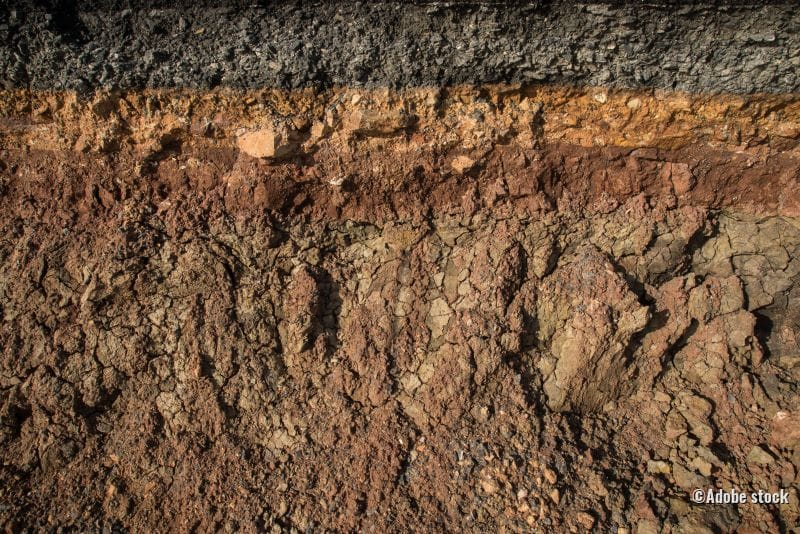

Bachelor of Science in Environmental Science (2025–2029)
KCSE (2021–2024) - Mean Grade B
My interests include environmental biology, conservation and sustainability.

Participated in a group field study at Ndarugo Quarry, where soil samples were collected from different soil layers. I later took part in laboratory preparation and analysis of the samples, including oven drying and pH testing.
Attended the Green Careers Caravan, where I listened to discussions about career opportunities and professional pathways in the environmental sector.